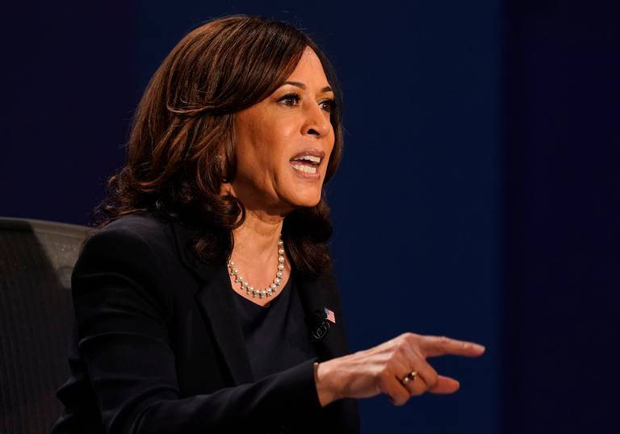

Despite all the fury on social media about the fly on Mike Pence’s head and Kamala Harris’ demeanor, analysts say the vice presidential debate is unlikely to alter the state of the presidential race.
Yet the attacks on Harris afterward were particularly harsh.
The comments during and after Wednesday’s debate were full of complaints that the Democratic vice presidential candidate was too snarky, catty, and had an annoying voice. Many took issue with her facial expressions.
“Take it like a woman. Don’t make faces,” tweeted former Fox News host Megyn Kelly.
“Mike Pence was a gentleman, forthright and focused. He delivered his plan for America brilliantly,” actor James Woods said on Twitter. “Kamala Harris behaved like a ‘Valley Girl,’ smirking and rolling her eyes like a petulant brat, dodging every question she was asked.”
Speaking with Fox New host Laura Ingraham after the debate, Ohio Pastor Darrell C. Scott said Harris was “Hillary Clinton in black face.” #BlackHillary began to trend on Twitter.
Harlan Z. Hill, a Republican consultant and advisor to the Trump campaign, tweeted “Kamala Harris comes off as an insufferable, lying b----.” The post received more than 8,000 retweets. The next day, Fox News Media said it would no longer book Hill, who is a frequent guest on the network, because of the vulgar remark.
History shows that voters vote for presidential candidates, not running mates. But there’s another sort of history that was evident in this debate – a woman, particularly one of color, is in for a rougher time when she runs for office.
“She’s experiencing what Hillary Clinton went through, only on steroids,” said Antjuan Seawright, a South Carolina-based Democratic consultant.
Kathleen Hall Jamieson, a professor of communication at the University of Pennsylvania and author of “Beyond the Double Bind: Women and Leadership,” said women like Harris have to do two things: act within the stereotypes about them and transcend them.
She said Pence, on the other hand, didn’t have the same kind of negative assumptions to overcome.
“She has to be very careful to not play into any stereotypes that would suggest that she is rude...and she can’t be perceived to be inappropriately aggressive,” Jamieson said. “And the problem is, what constitutes rude and aggressive are different for men and women. He gets more latitude than she does.”
“The word I kept hearing over and over again was ‘snarky,’’’ said Michael Steele, former Republican National Committee chairman. Steele, the only African American ever to head the GOP, is supporting the Democratic ticket this year.
“I heard it from Democrats and I heard it from Republicans,” he said.
Four women have been on major party tickets in presidential elections: vice presidential candidates Geraldine Ferraro, a Democrat, in 1984; Alaska Gov. Sarah Palin, a Republican, in 2008 and Clinton, the Democrats’ 2016 presidential candidate.
Clinton was widely disliked. Network exit polls showed that 55% of voters had an unfavorable opinion of her.
Harris faces similar challenges, said Kimberly Peeler-Allen, visiting practitioner at the nonpartisan Center for American Women and Politics in New Jersey. She cited similarities — both are seasoned attorneys, have been U.S. senators and are regarded as compelling speakers.
“They’re women not ‘staying in their place,’“ she said.
Palin was also unfairly treated, Jamieson said. While she had originally been brought onto the Republican ticket as an energy expert, by the end of the campaign, the Alaska governor had been painted as a flighty woman and poor mother. She said Palin was the subject of “vulgar, pornographic” internet posts.
Women have to look smart and tough, but not in a threatening way, and that can be difficult to do, said Peeler-Allen, who noted part of the problem is that a strong woman is seen as a threat by those accustomed to having power.
Labeling Harris “Black Hillary” is a way to apply decades of negative stereotypes about one of the best-known women in American politics to a candidate who is relatively unknown, Jamieson said.
“Many people can’t shake the idea that white men have a monopoly on talent and leadership, and many others are outright fearful and hostile of leaders who come from a different sector of society,” said Steve Phillips, founder of Democracy in Color and host of the podcast “Democracy in Color with Steve Phillips.”
The result is that women of color, like Harris, have to work harder to prove themselves than white men like Pence, Jamieson said.
“The male’s competence is presumed, but the female’s competence isn’t,” she said. “She has to show a higher amount of it, in order to have people to perceive that she has the same amount of it.”
The challenge for Harris is that “she’s the antithesis” of what people throughout history have seen from national leaders, Peeler-Allen said.
Add to that, she said, the omnipresence of social media and lingering resentment of people of color gaining stature once seen as an exclusive right for whites.
“Social media provides a safe place where people can say things. Fifteen years ago these things were said at backyard barbecues or in people’s homes, or maybe in exclusive clubs” Peeler-Allen said. “Now it’s in the open.”
There’s no question that non-white, non-males have a harder road, said Marlo Diaz Tucker, California state director for Concerned Women for America, a group that promotes traditional values.
But that means “you just have to work harder to show people you’re there to help and you have the skills.” And, she said, “you have to do it with some poise and grace.”
Kamala Harris comes off as such an insufferable lying bitch. Sorry, it’s just true.
— HARLAN Z. HILL 🇺🇸 (@Harlan) October 8, 2020
Kathleen Sullivan, a veteran New Hampshire Democratic activist, thought the anger was emblematic of the trouble the Trump campaign is having. She noted that on Thursday, Trump called Harris a “monster.”
“That’s a term usually applied by children to something that scares him, so I guess it means Trump is afraid of a strong yet joyous, assertive Black woman,” she said.
After talking to 15 undecided voters from eight swing states on debate night, political consultant and pollster Frank Luntz told Fox News that “this was Mike Pence’s night.”
Often, style and substance matter to undecided voters, he said, and “the complaint about Kamala Harris was that she was abrasive and condescending.”
Luntz found that “Harris’ reactions to Pence — the smiling, the smirking, the scowling” left them far “angrier” with her performance.”
But two post-debate polls gave an edge to Harris. A POLITICO/Morning Consult post-debate poll found that viewers thought Harris performed the best, while 40% named Pence. Women approved of her performance even more strongly, while men split about evenly between the two.
As voters begin to see more women in positions of power, Jamieson said they are becoming the rule, not the exception.
“We’ve now reached a point at which there are so many competent women in places across the culture, that the likelihood that we’re going to have a female president has risen dramatically,” she said. “Because that kind of experience with female leadership begins to undercut your stereotype.”
